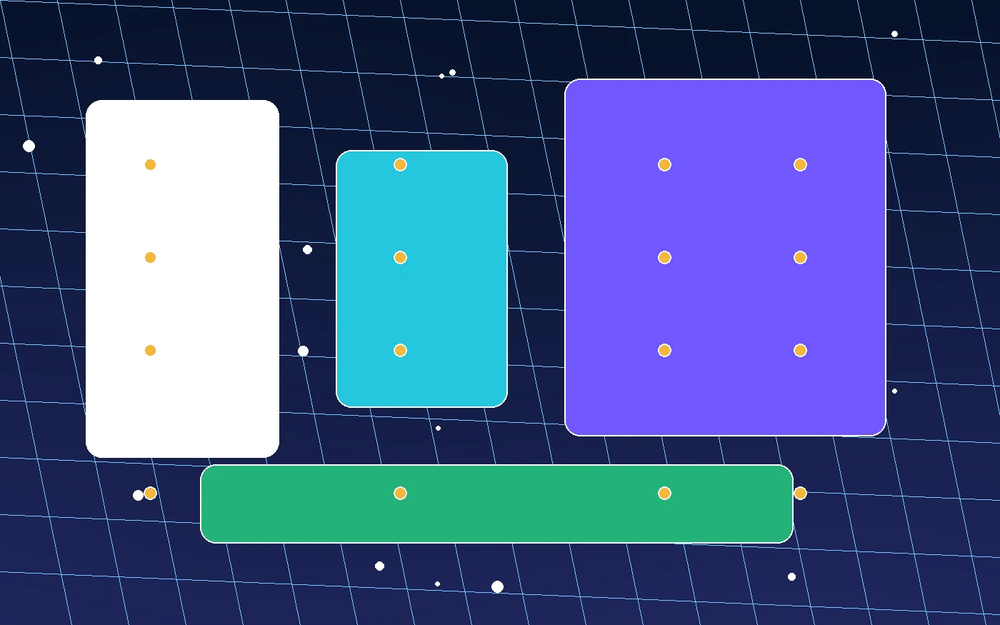

移动端先看权限
省电模式和后台网络限制会让加速器看似在线，却无法稳定维持连接。
专题页面
加速器在不同设备上会受到权限、后台策略和网络入口影响。排查前先分清手机、电脑、平板各自的限制。

| 类型 | 连接特点 | 建议检查 |
|---|---|---|
| 安卓手机 | 省电策略和后台限制更常见。 | 后台权限、VPN 权限、流量开关。 |
| iPhone | 系统配置变更后会重新确认授权。 | 描述文件、系统 VPN 开关、网络切换。 |
| Windows电脑 | 代理和防火墙设置会影响应用连接。 | 系统代理、休眠唤醒、后台任务。 |
| macOS设备 | 权限弹窗和钥匙串确认容易被忽略。 | 网络扩展权限、系统设置、客户端状态。 |
| 平板 | 常在 Wi-Fi、热点和流量之间切换。 | 入口网络、横竖屏界面、后台刷新。 |
| 家庭宽带与移动网络 | 入口稳定性差异明显。 | 路由器、信号、基站和当前节点。 |
省电模式和后台网络限制会让加速器看似在线，却无法稳定维持连接。
长期运行、休眠唤醒和其他代理软件，都会影响线路是否按预期工作。